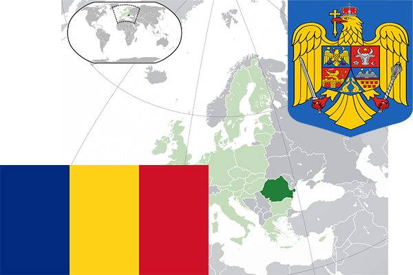

To`liq nomi: Ruminiya
Region: Janubiy-sharqiy Yevropa
Qonunchilik shakli: Respublika
Mustaqillik kuni: 1877-yil 9-may
Poytaxt: Buharest
Maydoni: 238 391 km²
Chegaradosh davlatlari: Ukraina, Moldova, Vengriya, Serbiya, Bolgariya.
Aholisi: 19 511 000 (2016-yil)
Aholi zichligi: 84,4 /км²
Aholining o`rtacha yoshi: 75,06 yil
Rasmiy tili: Rumin tili
Dini: Xristian
Pul birligi: Ley
Telefon prefiksi: +40
Internet domen: .ro
Xalqaro tashkilotlarga a`zoligi: BMT
Dengiz va okeanlarga chiqishi: Qora dengiz
YIM: Butun: $441 mlrd. (2016-yil) Jon boshiga: $ 22 319
Yirik shaharlari: Buharest , Timisoara, Konstanta